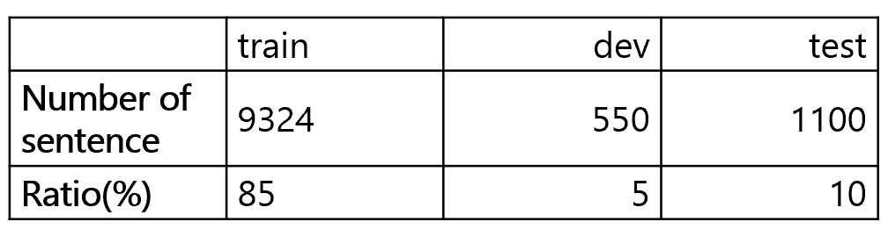
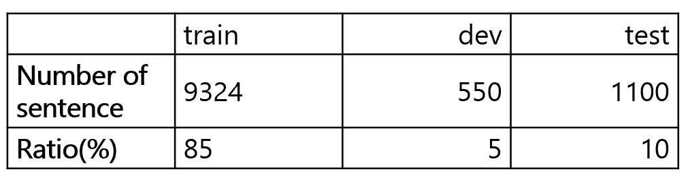

Semantic Text Similarity(STS)
Oct 24, 2022 - Nov 3, 2022Natural Language Processing (NLP) task that measures the similarity between two sentences

[Task Description]
This project handles the STS task, which provides a linear numerical measure of similarity for multiple sentences.
Two sentences are input, and a model is constructed to measure how semantically similar these pairs of sentences are, on a scale of 0 to 5, indicating their degree of semantic similarity.
This project handles the STS task, which provides a linear numerical measure of similarity for multiple sentences.
Two sentences are input, and a model is constructed to measure how semantically similar these pairs of sentences are, on a scale of 0 to 5, indicating their degree of semantic similarity.
[Dataset]

The data consists of the following sources: Korean Citizen Petition board title data, Sentiment Movie Corpus collected by Naver, and Slack data from Upstage.

The data consists of the following sources: Korean Citizen Petition board title data, Sentiment Movie Corpus collected by Naver, and Slack data from Upstage.
[Process]
EDA → Test Korean Pretrained Language Model → Data Augmentation → Tokenization / Hyper parameter tuning / Metric Learning→ Ensemble
EDA → Test Korean Pretrained Language Model → Data Augmentation → Tokenization / Hyper parameter tuning / Metric Learning→ Ensemble
[Model Result]
Evaluation using Pearson Correlation Coefficient(PCC)
- 0.9220 in the Public board
- 0.9175 in the Private board
Evaluation using Pearson Correlation Coefficient(PCC)
- 0.9220 in the Public board
- 0.9175 in the Private board